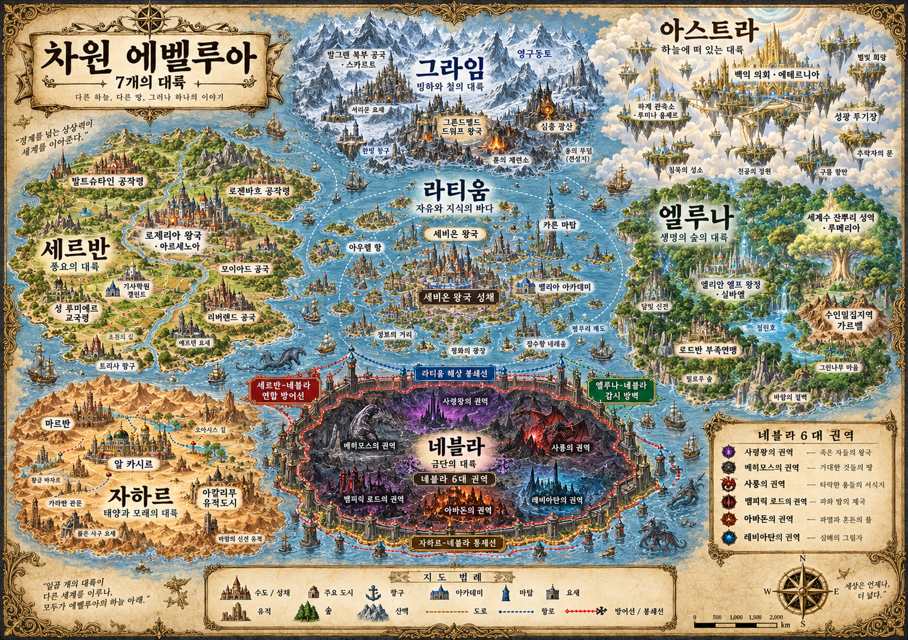

에벨루아 소개
에벨루아는 본래 하나의 원대륙이었으며, 고대에는 벨루아르 문명이 번영했습니다. 대분열 이후 세계는 세르반, 그라임, 엘루나, 자하르, 라티움, 네블라, 아스트라의 일곱 대륙으로 갈라졌습니다.
현재는 균열의 시대입니다. 고대의 유적과 봉인, 세계수의 잔뿌리에서 변화가 나타나며 대분열의 진실이 다시 수면 위로 떠오르고 있습니다.

원대륙 에벨루아
먼 옛날 에벨루아는 하나의 거대한 땅이었습니다. 종족과 국가, 신앙과 마법은 지금처럼 완전히 나뉘어 있지 않았습니다. 인간, 엘프, 드워프, 수인, 용, 정령, 천족, 마족의 선조들이 같은 하늘 아래 살았고 신과 정령과 용도 지금보다 가까운 존재였습니다.
그 시대가 평화롭기만 했던 것은 아닙니다. 고대인들은 신의 힘을 해석하고 정령과 계약했으며, 용의 피를 연구하고 차원의 문을 열기 시작했습니다.
고대문명 벨루아르
벨루아르는 원대륙 에벨루아에서 번영했던 고대 초문명입니다. 현재의 마법, 신성술, 룬 기술, 아카데미, 마탑, 신전 체계 대부분은 이 문명의 잔재에서 비롯되었습니다.
- 차원마법, 신성술, 정령술, 룬공학, 용혈학이 함께 발달했습니다.
- 고대 도로와 전이문이 대륙 전체를 이었습니다.
- 하늘도시, 지하 광산왕국, 수중도시, 세계수 신전이 공존했습니다.
- 네블라의 금지된 유물 대부분도 벨루아르 문명의 잔재입니다.
벨루아르는 찬란했던 문명이자, 현재 에벨루아의 강함과 저주의 근원으로 남아 있습니다.
차원핵과 세계수
차원핵
차원핵은 에벨루아 세계의 중심부에 존재한다고 여겨지는 근원 에너지입니다. 마력, 신성력, 정령력, 용혈, 저주, 생명력, 심연력이 모두 이곳에서 갈라져 나왔다는 설이 있습니다.
세계수
세계수는 푸른색, 초록색, 노란색 빛을 동시에 내는 신비한 나무였으며, 차원핵과 세계를 잇는 거대한 생명 구조로 여겨졌습니다. 벨루아르 문명은 차원핵의 힘으로 세계를 더 완벽하게 만들 수 있다고 믿었고, 연구가 깊어지면서 세계수에 손을 대기 시작했습니다.
이후 죽은 자의 부활, 정령의 광폭화, 용의 이성 상실, 인간의 마물화, 지반 상승, 검게 물드는 바다 같은 이상 현상이 나타났습니다. 광룡 태브릭도 이 시기에 탄생하고 이후 봉인되었습니다.
힘의 근원에 관한 설명은 세력마다 다릅니다. 마탑의 분석, 신전의 은총, 엘프의 자연 신앙은 같은 해석으로 합쳐져 있지 않습니다.
대분열
결국 원대륙은 찢어졌습니다. 갈라진 지반 사이로 바닷물이 쓰나미처럼 밀려들었고, 수많은 도시와 왕국, 종족, 신전, 마탑이 사라졌습니다. 각 지역은 서로 다른 운명을 맞았습니다.
- 세르반
- 서쪽으로 밀려나 살아남은 인간들의 문명권이 되었습니다.
- 그라임
- 북쪽으로 솟아올라 빙산과 바위산의 대륙이 되었습니다.
- 엘루나
- 동쪽으로 분리되며 세계수의 잔뿌리를 품었습니다.
- 자하르
- 남쪽으로 밀려나 뜨거운 기후와 사막, 고대 폐허의 대륙이 되었습니다.
- 라티움
- 벨루아르의 수도였으나 사방이 찢어져 섬나라에 가까운 중앙 자유대륙권이 되었습니다.
- 네블라
- 오염과 저주를 가장 많이 떠안은 금단대륙이 되었습니다.
- 아스트라
- 하늘로 뜯겨 올라가 부유대륙군이 되었습니다.
대재앙의 여러 이름
라티움은 벨루아르의 중심지로서 고대 기록을 가장 많이 보존하며 이 사건을 대분열이라 부릅니다. 다른 지역과 종족은 같은 재앙을 다른 이름으로 기억합니다. 이 차이는 원인과 책임에 대한 서로 다른 해석을 드러냅니다.
- 세르반 신전
- 신벌의 날
- 세르반 왕국
- 세계붕괴
- 라티움
- 대분열
- 엘루나 엘프
- 1차 숲의 침묵
- 그라임 드워프
- 과거 재앙
- 아스트라 천족
- 하계 격리
- 네블라
- 버림받은 날
각 세력의 대분열 해석
대분열의 진실은 아직 밝혀지지 않았습니다. 아래 기록은 각 세력이 가르치거나 믿는 해석입니다.
세르반 신전 — 신벌의 날
라티움 마탑 — 차원핵의 과부하
엘루나 엘프 — 자연의 자해적 방어
그라임 드워프 — 일곱 대지쐐기
아스트라 천족 — 하계 격리
시대 구분
- 1시대
원대륙 시대
벨루아르 문명이 번영하고 마법과 신성술이 함께 발전했습니다. 지금의 일곱 대륙은 하나의 대륙 안에 있던 지역권이었습니다. 이 시대는 현재 거의 신화로만 남아 있습니다.
- 2시대
오만의 시대
벨루아르는 차원핵의 존재를 느끼고 세계수에 손을 대기 시작했습니다. 죽은 자의 부활, 정령과 용의 광폭화, 인간의 마물화 등 이상 현상이 나타났습니다.
- 3시대
대분열
원대륙이 찢어지고 바닷물이 갈라진 지반으로 밀려들었습니다. 일곱 대륙이 서로 다른 운명을 맞았고 수많은 도시와 왕국이 사라졌습니다.
- 4시대
침묵의 시대
기록이 거의 없는 대분열 직후의 혼란기입니다. 대륙들은 단절되었고 종족들은 생존에 매달렸습니다. 엘프들은 숲을 봉쇄했고 아스트라는 하계와의 통로를 닫아 비개입 원칙을 세웠습니다.
- 5시대
재건의 시대
각 대륙이 국가와 질서를 다시 세웠습니다. 왕국과 기사단, 계약 동맹과 대연합, 자유도시 연합·아카데미·마탑, 백익 의회와 관측소 등 현재 질서의 기반이 갖추어졌습니다.
- 6시대
봉쇄의 시대
네블라에서 언데드와 마수, 흑마법사, 마족 잔당이 확산되자 세르반·자하르·라티움·엘루나는 연합 방어 체계를 세웠습니다. 봉쇄에 동의하면서도 금지된 유물과 지식을 탐내는 각 대륙의 첩보전과 밀수, 비공식 원정이 이어졌습니다.
- 현재 시대
균열의 시대
겉으로는 질서가 안정된 듯 보이지만 대분열의 상처가 다시 벌어지고 있습니다. 네블라의 여섯 권역이 활발해지고, 세계수의 잔뿌리는 검게 변하며, 그라임의 봉인된 지하문명의 문이 울립니다.
라티움 내해 아래에서 고대 도시의 불빛을 보았다는 소문이 돕니다. 자하르의 유적이 스스로 작동하고, 세르반에서는 진짜 성녀와 가짜 성녀 논란이 일어납니다. 아스트라 개입파는 몰래 하계로 내려오기 시작했고, 광룡 태브릭의 이름이 고대 기록에서 다시 발견됩니다.
종족 체계
종족들은 외형과 능력뿐 아니라 대분열을 겪은 방식과 기억, 상처와 편견으로도 서로 다릅니다. 원문은 종족을 크게 세 부류로 구분합니다.
- 필멸 종족
- 인간, 엘프, 드워프, 수인, 인어처럼 국가와 사회를 이루고 살아가는 종족입니다.
- 초월 종족
- 천족, 마족, 용족, 정령처럼 수명과 힘, 기원과 존재 방식이 일반 종족과 다른 존재입니다.
- 변질 종족 / 경계 존재
- 언데드, 마수, 마족 혼혈, 흡혈귀, 저주받은 자들처럼 대분열 이후 탄생했거나 사회에서 배척받는 존재입니다.
마족은 기원과 힘으로는 초월 종족이지만, 사회에서는 네블라의 낙인 때문에 경계 존재처럼 취급됩니다. 언데드 역시 모두 몬스터인 것은 아니며, 일부는 의식을 유지합니다.
힘과 전투 체계 요약
전투 체계는 마법, 검술과 무기술, 몬스터와 마수 생태계, 클래스와 직업 체계의 네 축으로 나뉩니다. 출신 대륙, 교육, 자원, 신앙, 종족, 장비, 계약한 존재와 감수하는 위험에 따라 전투 방식이 달라집니다. 전투는 마수뿐 아니라 인간과 귀족가, 국가와 대륙 사이에서도 일어납니다.
힘의 근원에 대한 관점
라티움 마탑은 모든 힘을 분석 가능한 에너지 체계로 봅니다. 세르반 신전은 신성력을 마력과 다른 신의 은총으로, 엘루나 엘프는 정령력과 생명력을 세계수와 숲의 숨결로 여깁니다. 그라임 드워프는 룬을 대지와 조상의 맹세를 새기는 기술로 봅니다. 아스트라 천족은 신성력이 하계의 마력보다 우월하다고 믿으며, 네블라 흑마법사는 근원보다 복수를 위한 힘의 흡수에 관심을 둡니다.
마법의 세 단계
- 감응: 자신의 마나나 외부 마력의 흐름을 느낍니다.
- 구성: 주문, 수식, 룬, 의식, 매개체로 마력의 형태를 정합니다.
- 발현: 구성된 마력을 현실에 일으킵니다.
몬스터와 마수
몬스터는 자연 생태계에 존재하는 위험 생물입니다. 마수는 차원 오염, 네블라의 저주, 사룡의 역병, 벨루아르 유물의 영향으로 변질된 생물이며 통용적으로 마물이라 불립니다. 언데드는 죽은 자가 다시 움직이는 존재로, 몬스터나 마수와 구분되는 변질 존재입니다.
무기술과 역할
근접전투는 마법보다 널리 퍼져 있으며, 검·창·활·방패 등 다양한 무기와 대륙별 전투 방식이 존재합니다. 클래스는 고정된 운명이 아니라 사회가 전투 방식과 전문성을 구분하는 이름입니다. 클래스가 역할을 나타낸다면, 등급은 실력과 신뢰도를 나타냅니다.
현재 세계의 주요 갈등
현재의 질서는 저마다의 상처와 명분, 욕망과 공포 위에 서 있습니다. 대분열의 진실이 밝혀지지 않은 가운데 봉쇄선 밖으로 마수와 역병이 새어나오고 있습니다.
- 봉쇄와 탐욕
- 대륙들은 네블라를 막으면서도 그 안의 금지된 유물과 고대 지식을 탐냅니다.
- 자유와 배제
- 라티움은 평등을 외치지만 인어와 마족을 배제합니다. 마족과 네블라 출신자는 세계가 버린 죄를 뒤집어쓰고 살아갑니다.
- 신앙과 권력
- 세르반 신전은 신의 이름으로 돈과 권력을 챙기며, 성녀를 둘러싼 진위 논란도 일어납니다.
- 연구와 금기
- 라티움 마탑은 벨루아르의 진실을 추구하며 또 다른 오만을 반복하려 합니다. 세계수의 잔뿌리는 검게 변하고 그라임의 심층 광산은 열려서는 안 될 문을 품고 있습니다.
- 생존과 착취
- 길드는 왕국보다 빠르게 마을을 구하면서도 모험가를 소모품처럼 씁니다. 자하르는 물과 계약, 노예시장의 모순 위에 서 있습니다.
- 관측과 구원
- 아스트라는 하계를 구하지 않는 천국이라는 모순을 품습니다. 하계의 종족들은 비개입을 의심하고, 천족 역시 네블라의 위협에서 완전히 안전하지 않습니다.